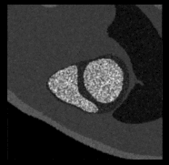

Contact: Patrick Clarysse, Hugues Benoit-Cattin.
Each instant represented a cumulative CPU time of 31 min. The best execution time in VIP was 5 min.
A 2D MR balanced steady state free pre- cession (bSSFP) sequence at 1.5T was simulated on a cardiac cycle (14 instants) extracted from the ADAM model. The following scan parameters were chosen: TR/TE = 2.9/1.2 ms and flip angle = 45 degrees, matrix size 256x256, number of signal average. In spite of the limited number of anatomical structures compared to real bSSFP MR images, contrasts in the images are realistic with a blood hypersignal in the cavities as opposed to myocardium.
|  |